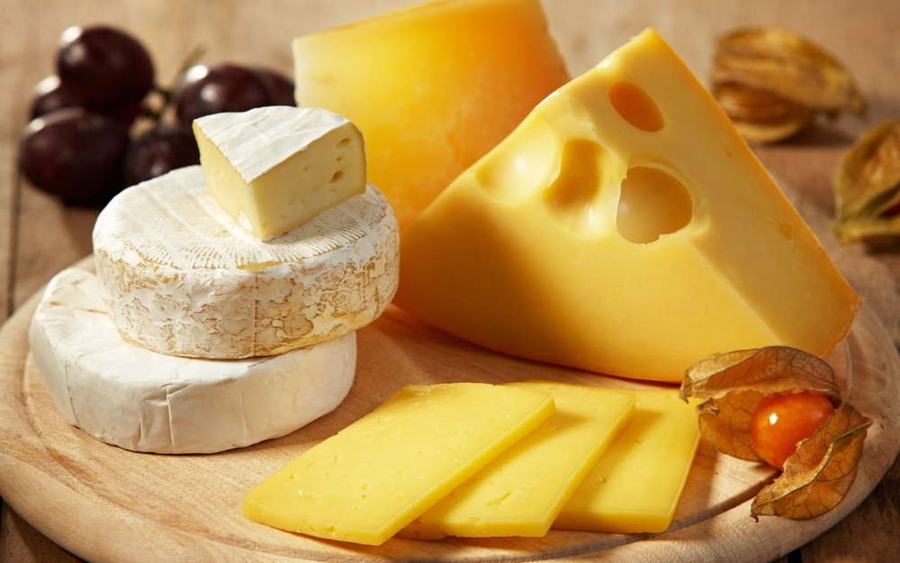
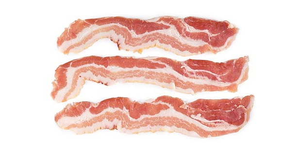

Как известно из курса истории древний человек употреблял в пищу продукты в сыром виде. Когда же появилась впервые еда, обработанная с помощью тепла, холода или иными другими способами, еда которая более привычна нам? Давайте проследим, как развивалась история еды. Жареное мясо. Как считают ученые, примерно 1,8 млн. лет тому назад человек начал впервые подвергать тепловой обработке мясо. Такая еда лучше усваивается и более питательна. И это был важнейший шаг в эволюции человека. Хлеб. В ходе раскопок в России, Чехии и Италии археологи наткнулись на примитивные ступы, в которых обнаружились остатки корней рогоза и хвоща. Эти корни перетирались в муку, смешивали ее с водой и пекли лепешки. И хотя по основной версии историков и антропологов земледелие возникло около 12 тыс. лет назад, первые лепешки – прообраз будущего хлеба люди стали печь примерно 30 тыс. лет назад. История еды удивит нас тем, что древнейшим напитком человечества можно считать пиво. Некоторые ученые считают, что первое пиво могло быть получено еще за 7 тыс. лет до н.э., как побочный продукт хлебопечения. Установлено, что древние шумеры тратили до 40% зерна на изготовление пива. А первые материальные свидетельства изготовления пива были получены при раскопках в Иране и датируются они примерно 3500 г. до н.э. Первенство в изготовлении вина также принадлежит жителям Ирана. Датируется это событие 5,4 тыс. лет до н.э. Позже виноделие распространилось в Ливан и Египет, а благодаря финикийским мореплавателям – по всему Средиземноморью. 6,7 тыс. лет до н.э. появились кукурузные лепешки. Считается, что первыми окультурили кукурузу жители американского континента, которые замачивали кукурузу в известковом растворе, чтобы получить тесто. В результате этого процесса выделялись питательные вещества.
А вот самый древний сыр был найден в Польше и датируется он 5 тыс. лет до н.э. Хотя овцы и козы были одомашнены гораздо раньше, примерно за 8 тыс. лет до н.э. Возможно и продукты типа сыра, йогурта, простокваши возникли раньше. Учеными доказано, что ген, отвечающий за усвоение лактозы, возник сравнительно недавно, в последние несколько тысячелетий. Значит, люди времен неолита не могли пить простое молоко. И чтобы употреблять этот ценнейший продукт, сквашивали его или превращали в сыр. В таком виде, кстати, молочные продукты и хранятся дольше. История еды умалчивает, какие были первые виды сыра. Но можно предположить, что жители жарких регионов, таких, как Средний Восток и Южная Азия, при изготовлении сыров применяли много соли. Так появились сорта фета и брынза, которые до сих пор популярны на Ближнем Востоке, Юго-восточной Азии и Греции. А знаменитые швейцарские сыры, рокфор и бри, по-видимому, были изобретены в более северных районах заселения человека. 4,5 тыс. лет до н.э. люди стали отжимать из оливок масло. Оливковое масло в исходном состоянии употреблять в пищу невозможно: оно слишком горькое. И люди научились сбраживать оливки в щелочном растворе, прежде чем отжимать из них столь ценный продукт, как оливковое масло. Пальмовое масло появилось немного позже, 3 тыс. лет до н.э., а первыми получателями его являются египтяне. Впервые пальмовое масло было найдено в египетских гробницах. История еды поведает, что жителям древней Месопотамии принадлежит первенство в замачивании овощей в уксусе для их более долгого хранения. Маринование овощей зародилось 2,4 тыс. лет до н.э. Очень давно люди знакомы с макаронными изделиями. Остатки просяной лапши были найдены на северо-западе Китая. А макаронные изделия из пшеницы появились в том же Китае 2 тыс. лет до н.э. и оттуда уже распространились на запад. Обожаемый многими сладкоежками шоколад, как поведала нам история еды, был впервые получен в Центральной Америке. Представители доольменских цивилизаций размалывали какао-бобы, смешивали полученный порошок с водой и взбалтывали смесь до получения пены. Этот напиток с удовольствием употребляли в пищу. Было это 1,9 тыс. лет до н.э. Через 3,4 тыс. лет после этого испанец Эрнан Кортес привез какао бобы в Испанию и уже там к ним впервые был прибавлен сахар. Бекон впервые стали делать китайцы. 1,5 тыс. лет до н.э. они стали солить соответствующие части свиных туш. И делалось это, конечно, в основном для того, чтобы дольше сохранить мясо.
Очень давно человечество знакомо с сахаром. 500 лет до н.э. индийцы перерабатывали сахарный тростник и получали огромные сахарные головы. Это делалось путем кипячения и охлаждения экстракта сока тростника. Примерно через тысячу лет индийцы же научились измельчать эти головы в сахарный песок, что послужило толчком к его дальнейшему распространению по миру. Из истории еды известно, что суши возникло в 700-е годы уже нашей эры. Таким образом люди консервировали рыбу. Посоленная рыба покрывалась отварным рисом и оставлялась для брожения на несколько месяцев. Сгнивший рис затем выбрасывали, а рыбу употребляли в пищу. Удовольствие это было не из дешевых, поэтому лакомились таким блюдом только состоятельные люди. Сыр тофу, изготавливаемый из соевых бобов, изобрели китайцы. Именно в произведениях китайского писателя Тао Ку впервые упоминается этот продукт. Возникновение тофу датируется примерно 965 г. н.э. История еды, конечно, не обойдется без кофе. Середина 15 века – время изобретения кофе. Считается, что родиной этого напитка является Йемен, а точнее суфийские монастыри, располагавшиеся на его территории. Кофейные зерна поставлялись из Эфиопии, а впоследствии кофейные деревья стали взращивать и в самом Йемене, а также Египте, Дамаске и Мексике. Интересен тот факт, что первоначально кофе употребляли как лекарство от болей в животе и вялости. В Европе кофе появился благодаря венецианским купцам к концу 16 века. И к середине 17 века распространился уже во Франции, Британии и Нидерландах. 1767 г. считается годом рождения газированной воды, а изобрел ее британский естествоиспытатель Джозеф Пристли. В 1894 г. были изобретены кукурузные палочки. Это было в санатории Батл-Крик (штат Мичиган), и изначально кукурузные палочки изготавливались для вегетарианской диеты. В 1908 году, как повествует история еды, был открыт глутамат натрия – знаменитый сегодня усилитель вкуса, История еды: макароныблагодаря которому колбасу можно изготовить без мяса, бульонные кубики без использования косточек, ароматные чаи без добавления туда ягод и т.д. и т.п. Совсем недавно по историческим меркам были изобретены мясные консервы – 1926 г. Первенство в этом изобретении принадлежит Джею Хормелу. Поначалу консервировалась только свинина. Но постепенно добавилось мясо птицы, кролика, говядина… А вот прошедший 2013 год – это дата изобретения мяса, выращенного в лаборатории из стволовых клеток. Как видите, эволюция продолжается. И продолжается история еды. Чем будут питаться люди будущего? Об этом мы пока можем только догадываться.
Ученицы 11 класса гимназии №1
Медуницыной Александры.
Учитель Шотт А.А.